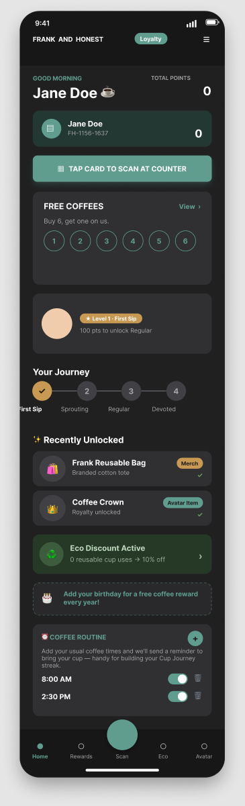
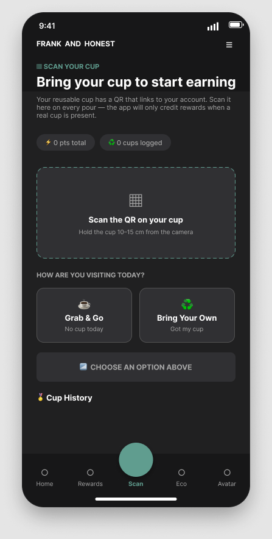
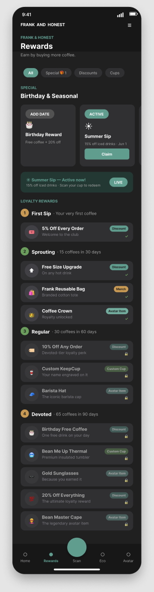
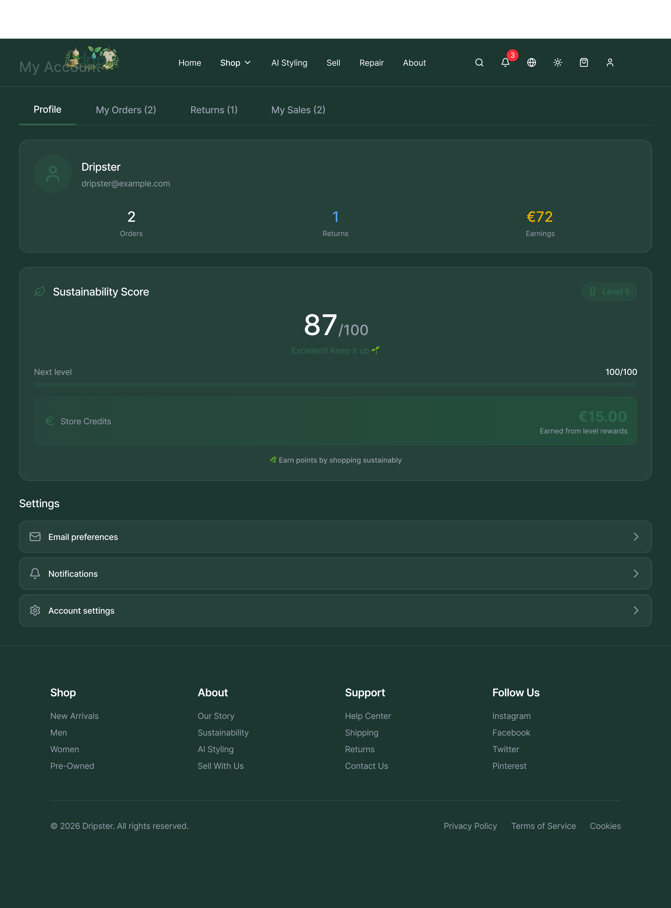
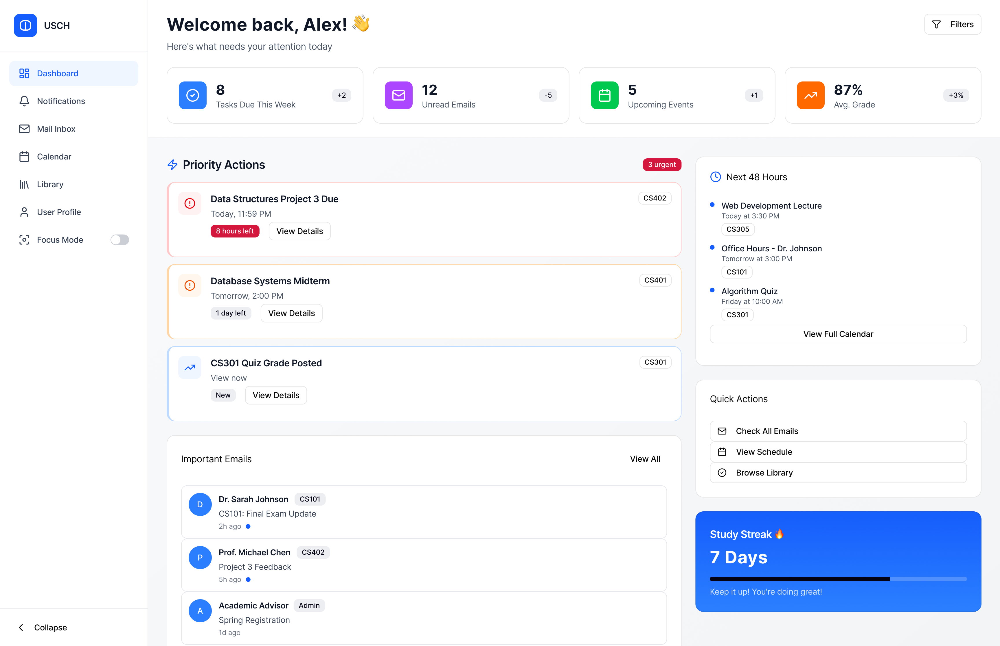

01Musgrave / Frank & Honest
Making reusable cups easier to remember
Turning a forgotten reusable cup into a more rewarding daily routine.
Research & Figma prototyping lead · Team capstone
Product design · Product marketing
I’m Cedric, a University College Cork MSc graduate. My work spans service prototypes, student research, and B2B SaaS launches.
Open to roles across Ireland



Reported landing-page conversion
Pepsales AI · Campaign periodStudents in moderated testing
USCH · Two testing roundsConnected app prototypes
Musgrave · Team capstoneDesign research, prototypes, and product launches
5 projects
01Musgrave / Frank & Honest
Turning a forgotten reusable cup into a more rewarding daily routine.
Research & Figma prototyping lead · Team capstone

02Drip / Circular fashion
Making repair, resale and product transparency part of the shopping experience.
Research lead · Persona lead · Figma co-lead

03USCH / Student experience
A calmer dashboard for the messages, deadlines and resources students need.
End-to-end UX research & product design
04Pepsales AI / B2B SaaS
Connecting landing-page UX, lifecycle email and campaigns to lead generation.
Product Marketing Associate
05Kommunicate / B2B SaaS
Product positioning, launch execution and sales enablement for AI customer support.
Associate Product Marketing Manager
Hands-on marketing experience across B2B SaaS and education. Explore my role at each company.
Pepsales AI · India · March–June 2025
Making the product story clearer across landing pages, email and acquisition campaigns for an AI sales platform.
Kommunicate · India · August 2023–February 2025
Connecting an AI customer-support product with the buyers, communities and sales conversations that drive adoption.
Divine Grace Institution of Health Sciences · India · November 2022–July 2023
Helping an education institution reach prospective students through useful content, search visibility and enrolment campaigns.
Metrics are reported in my CV and describe the relevant campaign or role period.
01 / Understand
Interviews, evidence, and a clear problem statement before a polished screen. Find the moment where people get stuck.
02 / Make
Prototype the journey, refine the hierarchy, and connect design decisions to user needs and business goals.
03 / Learn
Watch people use the experience. Measure what happened, separate findings from expectations, and iterate.
My path runs from mechanical engineering and an MBA to B2B SaaS marketing and an MSc in Design & Development of Digital Business at University College Cork.
That combination shapes how I work: understand the system, listen to the person using it, and connect the design to a meaningful outcome.
I work with Figma for research-led design and prototyping, and HTML, CSS, and JavaScript for web experiences. This portfolio uses those same fundamentals.
Open to product design, UX research, and product marketing opportunities across Ireland.